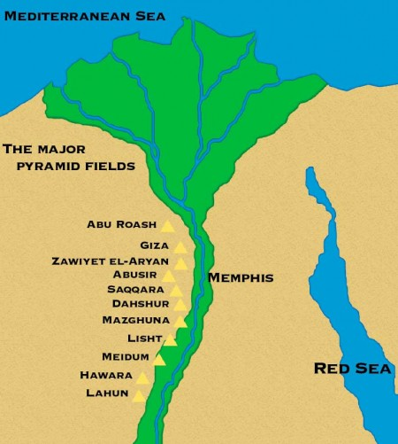

With the red pyramid, Sneferu set the standard for all true pyramids to come. He included aboveground burial chambers, a mortuary temple, and a causeway leading down to a valley temple. This was the model followed by his son, Khufu, wh built the first and largest pyramid at Giza. The Giza pyramids were erected on a rocky plateau on the west bank of the Nile in northern Egypt and were connected, by covered causeways, to mortuary temples in the valley below the plateau. These temples had landing stages which were linked to the Nile by a canal. In ancient times they were included among the Seven Wonders of the World.
The largest of the three pyramids at Giza, known as the Great Pyramid, is truly an astonishing work of engineering. It was built over a twenty year period. Some believe that it was built by slaves, but this is not true. One hundred thousand people worked on the great structure for three months of each year, during the Nile’s annual flood when it was impossible to farm the land and most of the population was unemployed. The pharaoh provided good food and clothing for his workers, and was kindly remembered in folk tales for many centuries. The sides are oriented to the four cardinal points of the compass and the length of each side at the base is 755 feet (230.4 m). The faces rise at an angle of 51º 52’ and their original height was 481 feet (147 m). (They currently rise 451 feet [138 m].) It was constructed using around 2,300,000 limestone blocks, each weighing an average of 2.5 tons. Some blocks weigh as much as 16 tons. For centuries, the Great Pyramid was encased in smooth limestone, but this was plundered in our era to build Cairo.
Khufu’s son, Khafre (also known as Chephren). His pyramid, on a nearby site at Giza, appears taller than his father’s, but this is an illu¬sion; it is built on higher ground and was in fact, origi¬nally at 447 .5 feet (136.4 m), 33.5 feet (10.2 m) shorter than the Great Pyramid. Khafre’s pyramid retains some of its original limestone casing at the apex, and so it is possible to imagine how the pyramids might have ap¬peared in antiquity. Khafre also built the Great Sphinx, which is 66 feet high (20 m) and 240 feet long (73 m) and is part of Khafre’s pyramid complex. It represents Ra-Harakhte, the sun god, as he rises in the east at dawn but the face of the Sphinx is a portrait of Khafre himself, and is contemporary with his pyramid. It was carved from an outcropping of limestone left after quarrying the stone for his father’s pyramid.
Khafre’s son, Menkaura built the third pyramid at the Giza necropolis (cem¬etery). With an original height of 228 feet (70 m), it is less than half the height of the pyramid built by his grandfather, Khufu. The lower layers consist of red granite from Aswan and the upper courses were originally made of gleaming white limestone.
Unfortunately, the great sphinx has deteriorated over the millennia and was extensively renovated in ancient times. More recently it was mutilated by the Sultan Mohammed an-Nasir in AD 1300; and lost its nose in 1798, when Napoleon’s soldiers used it for target practice. There have recently been a number of speculative theories concerning the age of the Great Sphinx, but no material evidence exists to suggest that its history should be revised.
The fourth-dynasty king, Sneferu 2686 – 2667 BC, was the first to create the pyramid shape that we all recognize and associate with Egyptian architecture. He built three pyramids in all—but the first two were glorious failures.
Although pyramid-building in stone continued until the end of the Old Kingdom, the pyramids of Giza were never surpassed in their size and the technical excellence of their construction. New Kingdom ancient Egyptians marvelled at their predecessors monuments, which were then well over a thousand year old.
Pyramids were built during the Middle Kingdom (2055-1650 BC) but these consisted of a mud brick core with a stone skin and are now mere piles of rubble.
There are over 100 recorded pyramids in Egypt most of which belong to minor royalty or have no known owners. They required an enormous investment in resources and stood out in the landscape as easy pray to the robbers. The last royal pyramid was built by the first king of the 18th dynasty Ahmose 1550-1525 BC but, after that, the Egyptians ceased building these majestic burial structures for all time
